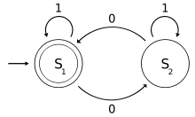
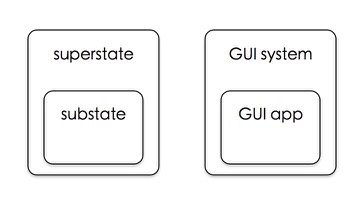

层次状态机
计算机程序是写给人看的，只是顺便能运行。
——《计算机程序的构造和解释》[1]
FSM #
在计算机领域，FSM(有限状态机)是一个在自动机理论和程序设计实践中很常见的术语，简单来说，有限状态机表示的是系统根不同输入/不同条件在各个状态之间进行跳转的模型。可以通过图或表来描述有限状态机，这种图或表一般被称为状态图/状态转移图(State Chart)或状态转移表。因为图更加直观，本文统一使用状态图来描述有限状态机。
在状态图里面，一般用圆圈或方框来表示状态，用箭头来表示状态之间的跳转，箭头可以带上跳转需要的输入或条件，也可以带附带其它描述。一个从空白处引出，没有源状态的箭头则表示整个系统的启动，启动后进入的第一个状态可以称为开始状态，可以用双重圆圈特别标出。整个状态图就是一个有圆圈，箭头及描述的有向图形。下面是一个简单例子。

上图表示一个接受二进制输入(输入为0或者1)，计算输入包含奇数还是偶数个0的状态机。其中S1状态表示"偶数个0"，S2表示"奇数个0"。系统启动后，沿着图中最左边的箭头进入S1状态，此时没有读入任何输入（0个0）。S1圆圈上方带1的箭头表示如果输入是1，则跳转到S1，即保持原状态不变。如果输入是0，则跳转到S2。其它箭头也可以类似理解。当全部输入都处理完之后，只需看当前状态是S1还是S2即可得出结论：输入具有奇数个0还是偶数个0。
由于状态机可以将问题整体的分解成各个部分状态及跳转，直观地对系统进行建模，所以它不仅被用于理论研究过程当中，而且被广泛用于程序设计实践，在操作系统，网络协议栈，各种分布式应用中都可以见到它的身影。
程序设计中的FSM #
由上面的表述我们得知，FSM是对系统的建模，是将问题/解决方案以一种条理化系统化的方式表达出来，映射到人的认知层面，而要在程序中表达FSM，也需要一定的建模工具，即用某种代码编写的方式(或称之为FSM模式)，将FSM以一种条理化系统化的方式映射到代码层面。在程序设计领域，到底有哪些常用的FSM实现方式呢？下面我们来做一个简单的回顾。
从简单到复杂，下面我们浏览一下常见的几种FSM实现模式[2]。
a. 嵌套if-else/switch模式 #
自从1960年第一个Lisp实现引入条件表达式以来，if-else/switch语句[3]已经成为每个程序员手头必备的工具，每当需要"根据不同条件进入不同分支"，就搬出它来组织代码，这与FSM里面"状态之间根据不同输入进行跳转"的概念有简单的对应关系，这就使得if-else/switch语句成为人们要表达FSM时最先选择的方式。
仍然以图1例子进行说明，我们用if-else/switch语句编写它的实现代码，用一个变量state表示当前状态，state可以取两个值S1, S2，输入input表示下一个输入的数字是0还是1，那么就有下列代码[4]:
type State int
type Input int
var (
StateS1 State = 1 + iota
StateS2 State
)
var (
Zero Input = 0
One Input = 1
)
var state = StateS1
func NumberOfZero(i Input) {
switch state {
case StateS1:
switch i {
case Zero:
state = StateS2
case One:
}
case StateS2:
switch i {
case Zero:
state = StateS1
case One:
}
}
}
上面的代码有一个明显的嵌套形式的结构，最外层的switch语句是根据当前状态state变量进入不同的分支，内层switch针对的则是输入，所有代码像挂在衣柜中的衣服一样从上到下一一陈列，结构比较清晰。这种嵌套形式if-else/switch语句的FSM代码组织方式，我们将其称之为嵌套if-else/switch模式。由于这种模式实现起来比较直观简明，所以它最为常见。
嵌套if-else/switch具有形式嵌套，代码集中化的特点，它只适合用来表达状态个数少，或者状态间跳转逻辑比较简单的FSM。嵌套意味着缩进层次的叠加，一个像图1那么简单的实现就需要缩进4层，如果状态间的逻辑变得复杂，所需要的缩进不断叠加，代码在水平方向上会发生膨胀；集中化意味着如果状态个数增多，输入变复杂，代码从垂直方向上会发生指数级别的膨胀。即使通过简化空分支，抽取逻辑到命名函数[5]等方法来"压缩"水平/垂直方向上的代码行数，依然无法从根本上解决膨胀问题，代码膨胀后造成可读性和可写性的急剧下降，例如某个状态里面负责正确设置20个相关变量，而下翻了几屏代码之后，下面的某个状态又用到上面20个变量里面其中的5个，整个代码像一锅粥一样粘糊在一起，变得难于理解和维护。
a. 状态表 #
另一个比较流行的模式是状态表模式。状态表模式是指将所有的状态和跳转逻辑规划成一个表格来表达FSM。仍然以图1为例子，系统中有两个状态S1和S2，不算自跳转，S1和S2之间只有两个跳转，我们用不同行来表示不同的状态，用不同的列来表示不同的输入，那么整个状态图可以组织成一张表格：
| State\Input | Zero | One |
|---|---|---|
| S1 | DoSomething, S2 | null |
| S2 | DoSomething, S1 | null |
对应S1行, Zero列的"DoSomething, S2"表示当处于状态S1时，如果遇到输入为Zero，那么就执行动作DoSomething，然后跳转到状态S2。由于图1的例子状态图非常简单，DoSomething动作为空，这里将它特别的列出来只是为了说明在更一般化的情况下如果有其它逻辑可以放到这里来。根据这个状态表，我们可以写出下列代码：
type State int
type Input into
const (
StateUndefined State = 0 + iota
StateS1
StateS2
)
var (
Zero Input = 0
One Input = 1
)
type Action func(i Input)
func DoSomething1(_ Input) {
// Do nothing here
}
func DoSomething2(_ Input) {
// Do nothing here
}
type Item struct {
Action Action
NextState State
}
var StateTable = [][]*Item{
[]*Item{
&Item{
Action: DoSomething1,
NextState: StateS2,
},
nil,
},
[]*Item{
&Item{
Action: DoSomething2,
NextState: StateS1,
},
nil,
},
}
var state = StateS1
func NumberOfZero(i Input) {
item := StateTable[int(state)][int(i)]
if item != nil {
item.Action(i)
if item.NextState != StateUndefined {
state = item.NextState
}
}
}
从上述例子我们可以看到，用这种方式实现出来的代码跟画出来的状态表有一个直观的映射关系，它要求程序员将状态的划分和跳转逻辑细分到一定的合适大小的粒度，事件驱动的过程查找是对状态表的直接下标索引，性能也很高。状态表的大小是不同状态数量S和不同输入数量I的一个乘积 S * I，在常见的场景中，这张状态表可能十分大，占用大量的内存空间，然而中间包含的有效状态跳转项却相对少，也就是说状态表是一个稀疏的表。
c. 状态模式 #
在OOP的设计模式[6]中，有一个状态模式可以用于表达状态机。状态模式基于OOP中的代理和多态。父类定义一系列通用的接口来处理输入事件，做为状态机的对外接口形态。每个包含具体逻辑的子类各表示状态机里面的一个状态，实现父类定义好的事件处理接口。然后定义一个指向具体子类对象的变量标记当前的状态，在一个上下文相关的环境中执行此变量对应的事件处理方法，来表达状态机。依然使用上述例子，用状态模式编写出的代码如下：
type Input int
const (
Zero Input = 0 + iota
One
)
type State interface {
OnEventZero(i Input)
OnEventOne(i Input)
}
var (
S1 = "S1"
S2 = "S2"
)
type StateS1 struct {
c *Context
}
func (self *StateS1) OnEventZero(i Input) {
self.doSomething1(i)
self.c.Tran(S2)
}
func (self *StateS1) OnEventOne(_ Input) {
// do nothing here
}
func (self *StateS1) doSomething1(_ Input) {
// do nothing here
}
type StateS2 struct {
c *Context
}
func (self *StateS2) OnEventZero(i Input) {
self.doSomething2(i)
self.c.Tran(S1)
}
func (self *StateS2) OnEventOne(_ Input) {
// do nothing here
}
func (self *StateS2) doSomething2(_ Input) {
// do nothing here
}
type Context struct {
allStates map[string]State
currentState State
}
func NewContext() *Context {
object := &Context{}
states := make(map[string]State)
states[S1] = &StateS1{c: object}
states[S2] = &StateS2{c: object}
object.allStates = states
object.currentState = states[S1]
return object
}
func (self *Context) Tran(nextState string) {
if s, ok := self.allStates[nextState]; ok {
self.currentState = s
}
}
func (self *Context) Handle(i Input) {
switch i {
case Zero:
self.currentState.OnEventZero(i)
case One:
self.currentState.OnEventOne(i)
}
}
var context = NewContext()
func NumberOfZero(i Input) {
context.Handle(i)
}
状态模式将各个状态的逻辑局部化到每个状态类，事件分发和状态跳转的性能也很高，内存使用上也相当高效，没有稀疏表浪费内存的问题。它将状态和事件通过接口继承分隔开，实现的时候不需要列举所有事件，添加状态也只是添加子类实现，但要求有一个context类来管理上下文及所有相关的变量，状态类与context类之间的访问多了一个间接层，在某些语言里面可能会遇到封装问题(比如在C++里面访问private字段要使用friend关键字)。
d. 优化的FSM实现 #
结合上述几种FSM实现模式，我们可以得到一个优化的FSM实现模式，它用对象方法表示状态，将状态表嵌套到每个状态方法中，因此它包含了上述几种模式的优点：事件和状态的分离，高效的状态跳转和内存使用，直接的变量访问，直观而且扩展方便。用它重写上述例子，得到下述的代码：
type Input int
const (
Zero Input = 0 + iota
One
)
type EventType uint32
const (
EventInitialize EventType = 0 + iota
EventFinalize
EventStateEntry
EventStateExit
EventUser
)
type Event interface {
Type() EventType
}
type FSMEvent struct {
T EventType
}
func (self *FSMEvent) Type() EventType {
return self.T
}
var (
FSMEvents = []*FSMEvent{
&FSMEvent{
T: EventInitialize,
},
&FSMEvent{
T: EventFinalize,
},
&FSMEvent{
T: EventStateEntry,
},
&FSMEvent{
T: EventStateExit,
},
}
)
type FSM interface {
Init()
Dispatch(i Input)
Tran(target string)
}
type State func(e Event)
const (
EventInput EventType = EventUser + 1 + iota
)
type InputEvent struct {
T EventType
I Input
}
func NewInputEvent(i Input) *InputEvent {
return &InputEvent{
T: EventInput,
I: i,
}
}
func (self *InputEvent) Type() EventType {
return self.T
}
type BaseFSM struct {
AllStates map[string]State
S State
}
func NewBaseFSM() *BaseFSM {
return &BaseFSM{}
}
func (self *BaseFSM) Register(name string, state State) {
self.AllStates[name] = state
}
func (self *BaseFSM) InitState(s State) {
self.S = s
self.S(FSMEvents[EventInitialize])
}
func (self *BaseFSM) Dispatch(i Input) {
self.S(NewInputEvent(i))
}
func (self *BaseFSM) Tran(target string) {
s, ok := self.AllStates[target]
if !ok {
panic("invalid target state")
}
self.S(FSMEvents[EventStateExit])
self.S = s
self.S(FSMEvents[EventStateEntry])
}
type ZeroCounter struct {
*BaseFSM
count int
}
func NewZeroCounter() *ZeroCounter {
return &ZeroCounter{
BaseFSM: NewBaseFSM(),
count: 0,
}
}
func (self *ZeroCounter) Init() {
self.Register("S1", self.S1)
self.Register("S2", self.S2)
self.InitState(self.S1)
}
func (self *ZeroCounter) S1(e Event) {
switch e.Type() {
case EventInitialize:
case EventStateEntry:
case EventStateExit:
case EventInput:
event, _ := e.(*InputEvent)
if event.I == Zero {
self.count++
self.Tran("S2")
}
}
}
func (self *ZeroCounter) S2(e Event) {
switch e.Type() {
case EventStateEntry:
case EventStateExit:
case EventInput:
event, _ := e.(*InputEvent)
if event.I == Zero {
self.count++
self.Tran("S1")
}
}
}
var (
counter *ZeroCounter
)
func init() {
counter := NewZeroCounter()
counter.Init()
}
func NumberOfZero(i Input) {
counter.Dispatch(i)
}
在这种模式中可以添加整个状态机的初始化动作，每个状态的进入/退出动作。上述代码中ZeroCounter.S1()方法的case EventInitialize分支可以放入状态机的初始化逻辑，每个状态方法的case EventStateEntry和case EventStateExit分支可以放入对应状态的进入/退出动作。这是一个重要的特性，在实际状态机编程中每个状态可以定制进入/退出动作是很有用的。
e. HSM #
上述几种模式中，状态之间都是相互独立的，状态图没有重合的部分，整个状态机都是平坦的。然而实际上很多问题的状态机模型都不会是那么简单，有可能问题域本身就有状态嵌套的概念，有时为了重用大段的处理逻辑或代码，我们也需要支持嵌套的状态。这方面一个经典的例子就是图形应用程序的编写，通过图形应用程序的框架(如MFC, GTK, Qt)编写应用程序，程序员只需要注册少数感兴趣的事件响应，如点击某个按钮，大部分其它的事件响应都由默认框架处理，如程序的关闭。用状态机来建模，框架就是父状态，而应用程序就是子状态，子状态只需要处理它感兴趣的少数事件，大部分事件都由向上传递到框架这个父状态来处理，这两种系统之间有一个直观的类比关系，如下图所示：

这种事件向父层传递，子层继承了父类行为的结构，我们将其称为行为继承，以区别开OOP里面的类继承。并把这种包含嵌套状态的状态机称为HSM(hierarchical state machine)，层次状态机。
加上了对嵌套状态的支持之后，状态机的模型就可以变得任意复杂了，大大的扩大了状态机的适用场景和范围，如此一来用状态机对问题建模就好比用OOP对系统进行编程：识别出系统的状态及子状态，并将逻辑固化到状态及它们的跳转逻辑当中。
那么在状态机实现模式里如何支持嵌套状态呢？从整个状态图来看，状态/子状态所形成的这张大图本质上是一个单根的树结构，每个状态图有一个根结点top，每个状态是一个树结点，可以带任意多的子状态/子结点，每个子状态只有一个父结点，要表达嵌套状态，就是要构造出这样一棵树。
go-hsm #
我用Golang编写了一个HSM框架go-hsm，设计要点如下：
- 用类来表示状态，局部化状态内部变量及逻辑，整棵状态树由具体应用构造
- 支持嵌套状态及行为继承，支持进入退出动作，
- 支持自定义事件，支持静态和动态两种跳转
它的代码在这里，go-hsm的使用例子则放在另一个项目go-hsm-examples。由于Golang本身的语言特点，有一些地方的实现较其它语言多了一些缺点，比如Golang里面的binding是静态的，为了将子类对象的指针传播到父类方法，要显式传递self指针，子类的接口函数也需要由应用重写。但由于HSM本身的灵活强大，go-hsm具有良好的可调整性及扩展性，是一个很好的状态机建模工具，一门灵活有效表达复杂状态机的DSL(Domain Specific Language)。
注：
[1] 《Structure and Interpretation of Computer Programs》一书的中文译本。
[2] 本文内容主要出自Miro Samek博士的经典著作《Practical Statecharts in C/C++: Quantum Programmming for Embedded Systems》，其中文译本书名为《嵌入式系统的微模块化程序设计：实用状态图C/C++实现》，翻译甚差，不推荐阅读。
[3] 各种编程语言里面的条件判断关键字和语句都不尽相同，有的if语句带then关键字，有的不带then，有的支持switch，这里将它们简单统称为if-else/switch语句。
[4] 本文中所有代码都为Go语言代码。
[5] 之所以强调函数是命名的，是因为很多语言支持匿名函数(即lambda函数)，在嵌套if-else/switch模式内部写匿名函数定义对降低代码膨胀起不了作用。
[6] OOP领域设计模式的流行，源于这本书《Design Patterns: Elements of Reusable Object-Oriented Software》的出版，其中文译本见这里。